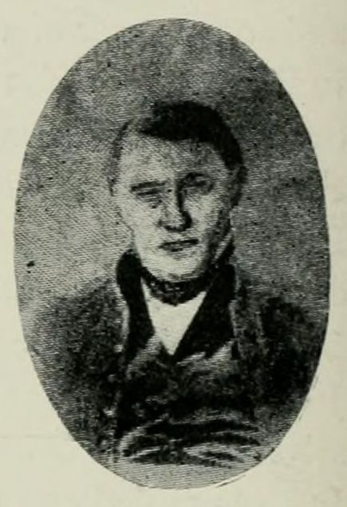
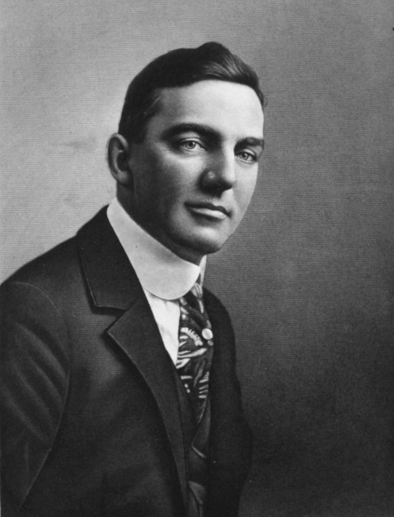
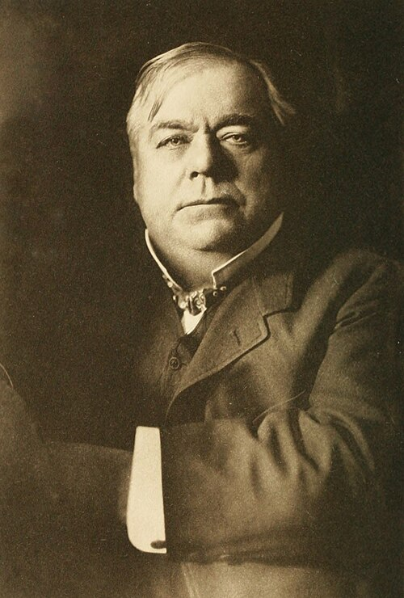

Some of the Founders of Santa Fe Hills

Nathan Bone
American Pioneer
"Nathan Boone Portrait" by Louis Houck is licensed under public domain.
Emory J. Sweeney
Real Estate Developer
"Portrait of Emory J. Sweeney" (Unknown) is licensed under public domain.
William Rockhill Nelson
Newspaper Publisher
"Portrait of William Rockhill Nelson" (Unknown) is licensed under public domain.Daniel Boone's son, Nathan Boone, came to Jackson County, MO and built a house at 26 W. Porte Cimi Pas, around 1840 (KCPL, 2024). The house was later owned by William Rockhill Nelson, founder of the Kansas City Star and the Nelson-Atkins Museum of Art, who made additions to the home (Euston, 2020). This house still stands to this day.
In 1919, Emory J. Sweeney purchased the land, which included the Boone-Nelson home, and the land bordered 85th and 89th Streets (north to south) and Wornall to Holmes Roads (west to east) (Euston, 2020). Sweeney had a few ideas about how to use this land, but eventually decided in 1923 to create a new subdivision named “Indian Village.” (Euston, 2020)
At the main entrance at 85th and Wornall, Sweeney built a large Dutch mill that housed the real estate office, and he even had totem poles created that were eighteen feet high (Euston, 2020)! In addition, at the entrance, a one-hundred foot “chime tower” was placed to sound every fifteen minutes (Euston, 2020)! I had never heard of any of this before I read this article, which I found incredibly interesting.
The Boone-Nelson home was to be the subdivision’s exclusive clubhouse, and the first house for sale was built across the street, at 8734 Virginia Lane, and the street was named after Sweeney's second wife (Euston, 2020). Lots only were sold by Sweeney to customers (Euston, 2020), which explains the reason for so many house styles in this neighborhood, as every house was built by different owners, at different times, who had different tastes.
By the end of the 1920s, the Depression came and things did not go well at this time for Sweeney, unfortunately, who was forced to sell Indian Village to an investor owned by William T. Kemper, Sr. (Euston, 2020). By 1938, the name of the neighborhood was renamed to “Santa Fe Hills”, the totem poles and windmill were removed, and the Boone-Nelson clubhouse was sold as a private family home (Euston, 2020).
The Santa Fe Hills Country Club on the east side of the subdivision was sold and the land was used to build apartments that stand today, and the pond that was part of the golf course is still there (Euston, 2020). I had always wondered why the apartment complex existed right next to the neighborhood, as it seemed out-of-place, but I now know the history of the area, which was more complex than I expected!